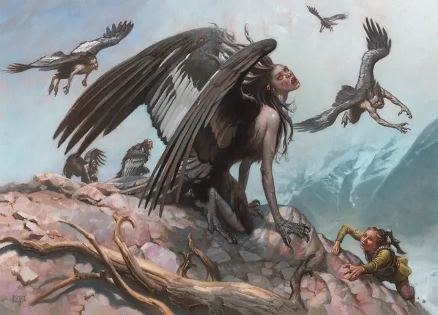

Гарпия
Harpy
Среднее Чудовище, Хаотичное Злое

Класс Защиты 11 Инициатива +1 (11)
Хиты 38 (7к8 + 7)
Скорость 20 футов, Полёта 40 футов
| мод | спас | ||
|---|---|---|---|
| СИЛ | 12 | +1 | +1 |
| ЛОВ | 13 | +1 | +1 |
| ТЕЛ | 12 | +1 | +1 |
| мод | спас | ||
|---|---|---|---|
| ИНТ | 7 | −2 | −2 |
| МДР | 10 | +0 | +0 |
| ХАР | 13 | +1 | +1 |
Чувства пассивное Восприятие 10
Языки Общий
Опасность 1 (200 опыта; БВ +2)
Действия
Когти. Бросок рукопашной атаки: +3, досягаемость 5 фт. Попадание: 6 (2к4 + 1) Рубящего урона.
Манящая песня. Гарпия поёт магическую мелодию, которая длится, пока гарпия концентрируется на ней. Спасбросок Мудрости: Сл 11, каждый Гуманоид или Великан в 300-футовой Эманации, исходящей от гарпии, когда она начинает петь. Провал: Цель становится Очарованной до окончания песни и повторяет спасбросок в конце каждого своего хода. Пока цель Очарована, она также Недееспособна и игнорирует Манящую песню других гарпий.
Если цель находится более чем в 5 футах от гарпии, цель должна в свой ход переместиться к гарпии кратчайшим путём, пытаясь оказаться в пределах 5 футов от неё.
Она Провоцирует атаки, но перед перемещением в опасную местность (такую как лава или яма), а также при получении урона от любого источника, кроме этой гарпии, цель повторяет спасбросок. Успех: Цель становится невосприимчива к Манящей песне этой гарпии на 24 часа.
Бонус мастерства +2
Среда обитания Горы, Леса, Прибрежье, Холмы
Сокровища Любые
Гарпия
Крылатый голос рока
Гарпии — полные ненависти существа, которые любят причинять боль и стремятся положить конец любому проявлению любви и жизни. Эти чудовища сочетают в себе черты людей с крыльями и лапами птиц-падальщиков. Услышавшие их печальную песню готовы следовать за ними куда угодно, не обращая внимания ни на что вокруг. Как правило, очарованное песней гарпии существо находит свою смерть в беспощадных когтях этого чудовища или среди природных опасностей.
Гарпии обитают в отдалённых мрачных местах, наполненных атмосферой трагедии и отчаяния. В некоторых легендах говорится, что когда-то они оскорбили богов и за это их превратили в чудовищ. Возможно, сегодняшние гарпии — потомки тех проклятых смертных.
У каждой гарпии своя уникальная песня. Некоторые мелодии — прекрасные и душераздирающие, другие — жалобные и пронзительные, притягивающие лишь тех, кто обладает магическим даром.